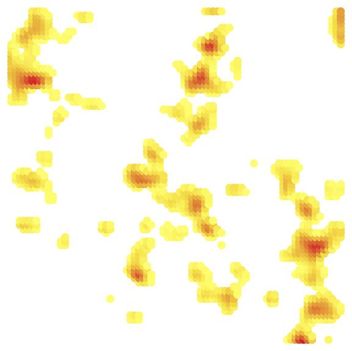

Qianhang Ding 丁乾航 To Understand To Find

CMB & LSS Simulation [Mathematica notebook]
Cosmic microwave background (CMB) was produced during recombination era. At that time, baryon acoustic oscillations (BAO) just ended, the gravitational potential of dark matter and baryon shaped the CMB. Then high density regions in CMB give seed of large scale structure (LSS) to form fibre structure of universe. So this toy model simulation is based on BAO gravitational potential distribution to get the CMB, then take the high density regions in CMB as the seed of LSS.


Zhihu Picture Web-Crawler [Mathematica notebook]
How to Use Zhihu Picture Web-Crawler
1. Give the question ID in Zhihu (such as https://www.zhihu.com/question/27741971, question ID is 27741971);
2. Give the number of pages you want to get in this question, then programming download pictures in these pages;
3. Give the save address that you want to save pictures (for Windows system, like "C://Users//Pictures//wallpaper");
4. Fill the first commend line using the information above and run it;
5. Run the second part programming.
Important Things You Should Notice!!!
1. This programming is created for studying relative string knowledge in Mathematica, you must not use this programming for illegal things!!!
2. To avoid your IP was prohibited by Zhihu, the speed of programming has slowed down (one action per second).
3. Because the shortcoming of programming, this programming can only get 75 percents of all answers.
Montage Picture Maker [Mathematica notebook]
Montage picture is combination of small pictures. Use different pictures to replace pixels in original picture, finally export the montage picture. You can save following original picture and montage picture, then zoom in the montage picture to find another world.
Tank Game [Mathematica notebook]
Tank game is based on Mathematica kernel. You can use "up", "down", "left", "right" keys to control your tank and press "space" key to shoot. Best wishes!